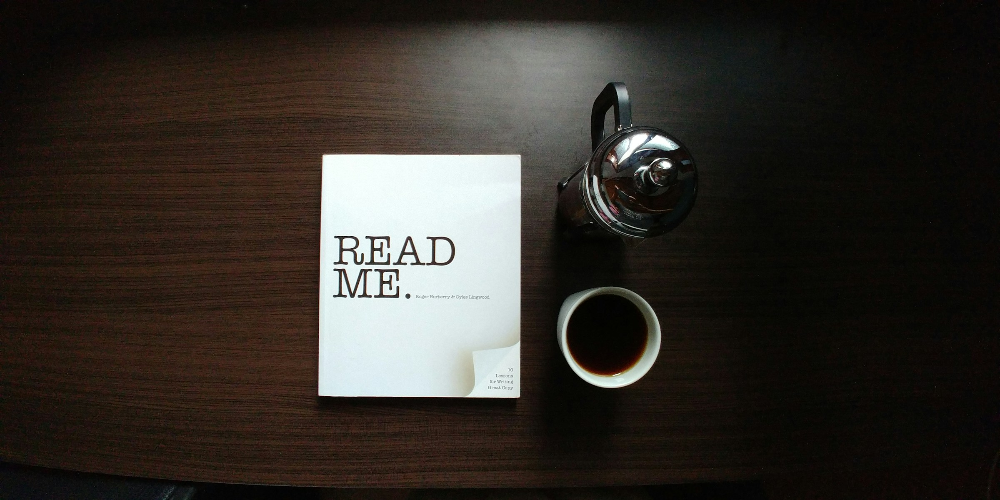
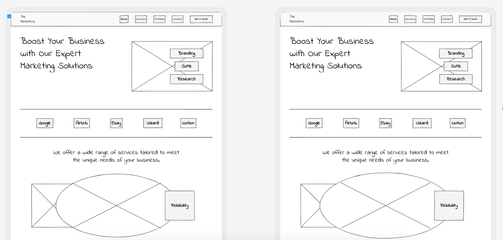

What is the purpose of a README file?
A README file introduces a project, explaining what it does, how to install it, and how to use it. It helps others understand your project quickly.
Read moreLearn about key tools every developer uses: README files, wireframes, and Git branches.

A README file introduces a project, explaining what it does, how to install it, and how to use it. It helps others understand your project quickly.
Read more
A wireframe is a visual guide that outlines a webpages structure. Designers and developers use it to plan layouts before adding content or styling.
Read moreA Git branch allows developers to work on new features or fixes separately from the main code. This keeps the main project stable while updates are tested.
Read more